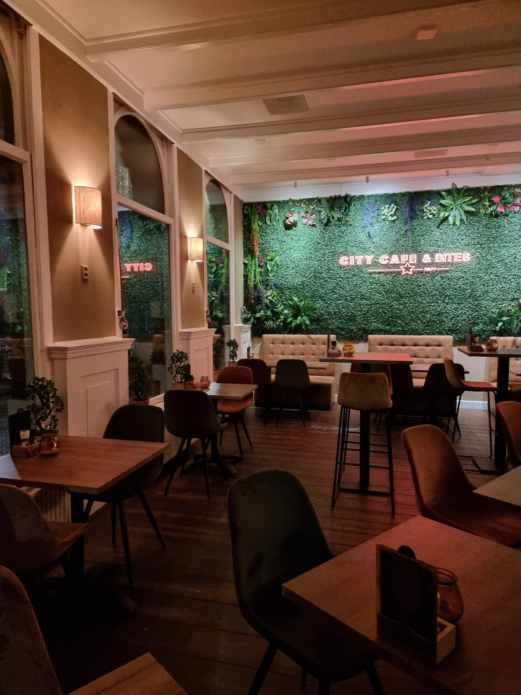
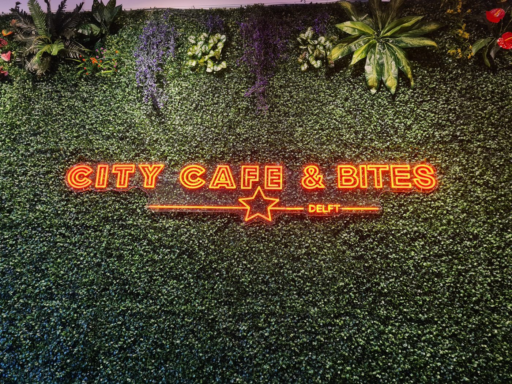
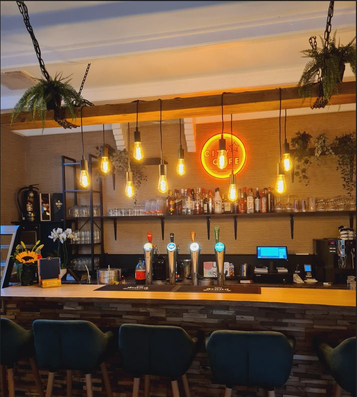
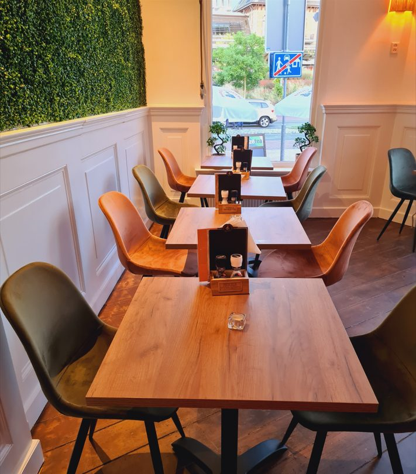
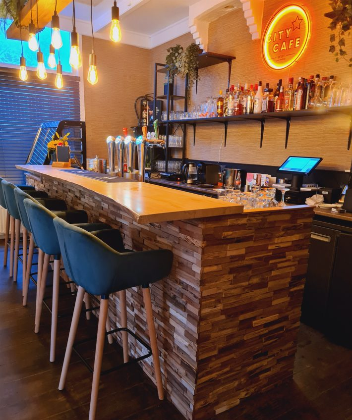
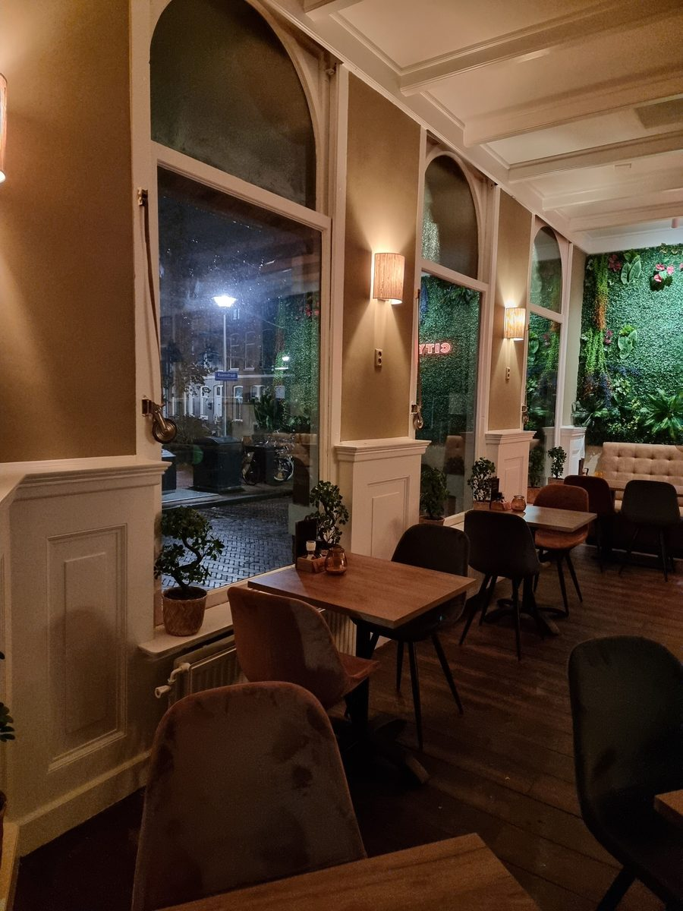
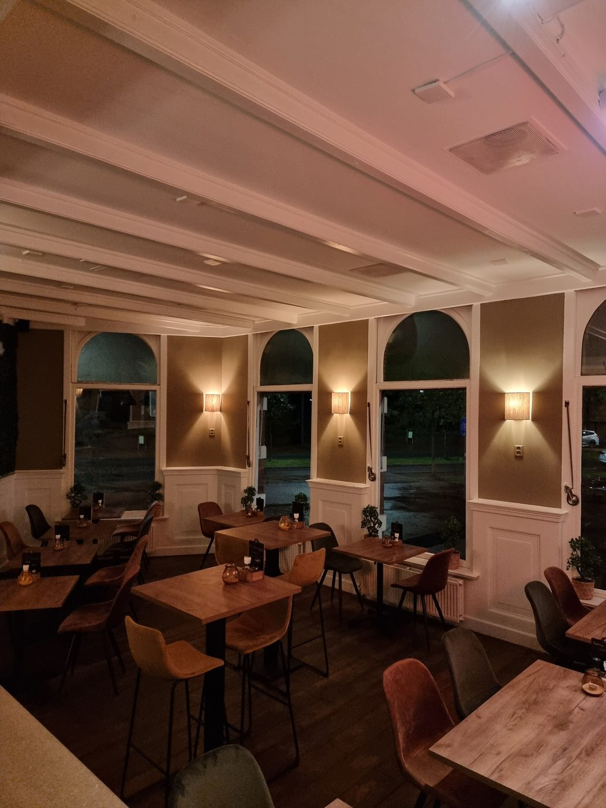

Surinaams eten in Delft, in een zaak om te blijven zitten
Roti, Surinaamse broodjes, bites en cocktails aan de Coenderstraat. Voor een diner met vrienden of familie, een snelle lunch of je bestelling om mee te nemen. It's not just eating. It's an experience.
Wat mag het zijn?
Van roti tot een broodje pom: de authentieke Surinaamse keuken, met passie bereid door onze chef.
Roti
Kipfilet, lams, hete kip, dynamite of vega.
vanaf € 14,00Roti rol
Kipkerrie, lams, hete kip, vega of bakkeljauw.
vanaf € 10,00Broodjes & bara
Pom, bakkeljauw, kipkerrie, lams of een gevulde bara.
vanaf € 4,00Saoto & telo
Saoto soep (ook vega) en telo met bakkeljauw, kip of lams.
vanaf € 8,00Rijst, nasi & bami
Met witte rijst, kousenband en aardappel, of nasi en bami.
vanaf € 12,50Bites & de plank
Hotwings, saté en loempia's, of de Surinaamse plank voor twee.
plank € 27,50
Een culinaire reis vol smaken uit Suriname
Bij City Cafe & Bites komen Surinaamse gerechten samen in een mooie zaak met een eigen sfeer. Onze chef kookt met passie: van smaakvolle roti tot pittige bites en belegde Surinaamse broodjes.
Ideaal voor een gezellig diner met vrienden, familie of een avondje uit met z'n tweeën. Liever thuis eten? Bel je bestelling door en haal hem op.
"It's not just eating. It's an experience."




Iets te vieren? Doe het bij ons
Onze zaak is ook te boeken voor feesten en partijen. We denken graag met je mee om er een succes van te maken.

Niets is te gek, alles kan
Laat ons weten wat je viert, de datum en met hoeveel personen je komt. Dan maken we samen een plan, met eten en drinken van onze eigen kaart.
- Verjaardagen
- Babyshowers
- Jubilea
- Borrels & bedrijfsuitjes
Kom langs of reserveer
Reserveren, afhalen of een vraag? Bel of app ons.
City Cafe & Bites
Coenderstraat 54, Delft
Openingstijden
| Maandag | 17:00 – 21:00 |
| Dinsdag | 12:00 – 22:00 |
| Woensdag | 12:00 – 22:00 |
| Donderdag | 12:00 – 22:00 |
| Vrijdag | 12:00 – 22:00 |
| Zaterdag | 17:00 – 22:00 |
| Zondag | gesloten |
Afhalen? Geef je bestelling telefonisch door, dan staat hij klaar.